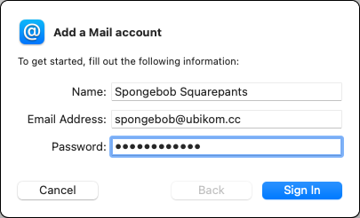
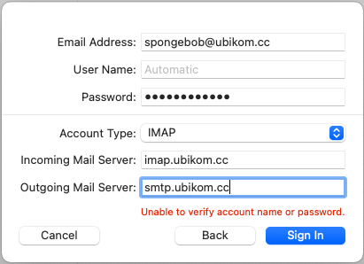

From the identity details page, you must have at least the following:
If your client does not support automatic configuration, you will also need these:
Mail comes with Mac OS, and it's easy to configure and use.
Open Mail, then go to Mail, Add Account, Other Email Account. menu.

Enter your name, email, and password, and click "Sign In".

Make sure account type is "IMAP". Enter "imap.ubikom.cc" for incoming mail server, and "smtp.ubikom.cc" for outgoing mail server, click "Sign In". You can leave user name as "Automatic".
On the next scree, select apps you want to use with this account - select "Mail", and optionally "Notes". Click "Done".
If your setup doesn't work, double-check your settings. You might want to delete this account completely and try to set it up again.
Check the list of known issues here. If you think you have found a bug, submit a new issue, or email lgx@ubikom.cc.